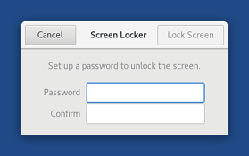

Esta versão corrige diversos problemas de segurança e os usuários devem migrar para ela o quanto antes.
Mudanças
Novos recursos
You can now lock your screen by clicking on the
 button in the system menu.
button in the system menu.
Se você definir uma senha de administrador ao iniciar o Tails você poderá desbloquear a tela com sua senha de administrador.
Caso contrário, você poderá definir a senha para desbloquear sua tela quando for bloquear a tela pela primeira vez.

Nós melhoramos muito o backend do recurso de persistência dos Programas Adicionais. Agora, seus programas adicionais:
- Serão instalados em segundo plano após o início da sessão ao invés de bloquearem a abertura da área de trabalho.
- Serão sempre instalados, mesmo se você estiver offline.
Foi instalado o pdf-redact-tools, uma ferramenta de linha de comando para limpar os metadados e editar arquivos no formato PDF convertendo-os para imagens no formato PNG.
Um erro indicando o nome da placa gráfica é exibido quando o Tails falha em iniciar o GNOME.
Atualizações e mudanças
O ícone da Documentação do Tails na área de trabalho agora abre a documentação no nosso website se você estiver online.
Foram instalados os drivers para a Video Acceleration API, para melhorar a exibição de vídeos em muitas placas gráficas.
Electrum foi atualizado da versão 2.7.9 para a 3.0.6.
Linux foi atualizado para a versão 4.15.0.
Tor foi atualizado para a versão 0.3.2.10.
Thunderbird foi atualizado para a versão 52.6.0.
Também ativamos o perfil do AppArmor do Thunderbird do Debian para confinar o Thunderbird para obter mais segurança.
Foram reescritos alguns scripts internos, desde shell scripts até Python, graças ao GoodCrypto.
Problemas resolvidos
Foi removida a exibição de mensagens de depuração e erro ao iniciar.

Foi corrigida a seleção de imagens ISO, que estava indisponível para outras línguas além do inglês no Instalador do Tails. (#15233)

Foi corrigido o Applet OpenPGP, que ficava indisponível ao descriptografar grandes quantidades de texto. (#6398)
Para mais detalhes, leia nosso changelog.
Problemas conhecidos
Tails Verification, our browser extension to verify Tails downloads, is broken in Tails 3.6. Please use it from Firefox, Chrome, or Tor Browser outside of Tails. (#15434)
O Enigmail não consegue baixar chaves OpenPGP para novos contatos se você tiver o GnuPG ativado. Você ainda pode baixar chaves OpenPGP usando o Senhas e Chaves. (#15395)
Devido a vários arquivos python localizados em /usr/local terem diferentes timestamps, essa versão não é reproduzível. (#15400)
Veja a lista de problemas de longa data.
Baixe o Tails 3.6
- Para instalar, siga nossas instruções de instalação.
Nós não forneceremos atualizações automáticas a partir de versões mais antigas do Tails para essa versão, por causa de um bug antigo que ocorre ao gerar os arquivos necessários (#13426). Você terá que atualizar manualmente.
Se você estiver fazendo uma atualização manual a partir do Tails 3.2, 3.3, 3.4 ou 3.5, então somente será possível selecionar uma imagem ISO se você estiver rodando o Tails em inglês. Nos outros idiomas, o botão de escolha de arquivo ficará inativo:
Para fazer uma atualização manual do Tails 3.2, 3.3, 3.4 ou 3.5, você pode:
Reinicie o Tails em inglês.
Inicie o Instalador Tails em inglês a partir da linha de comando:
LANG=en_US tails-installer
O que vem por aí?
Tails 3.7 está agendado para o dia 8 de maio.
Confira o nosso roadmap e veja nossos objetivos futuros.
Precisamos da sua ajuda e existem muitas formas de contribuir com o Tails (doar é apenas uma delas). Venha conversar com a gente!